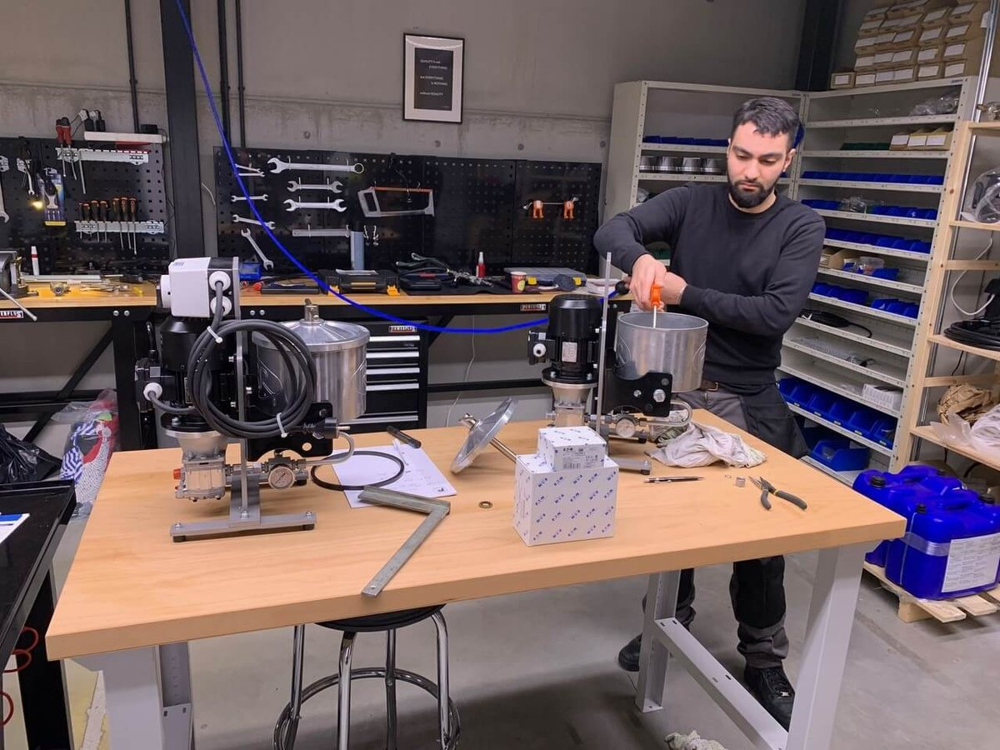
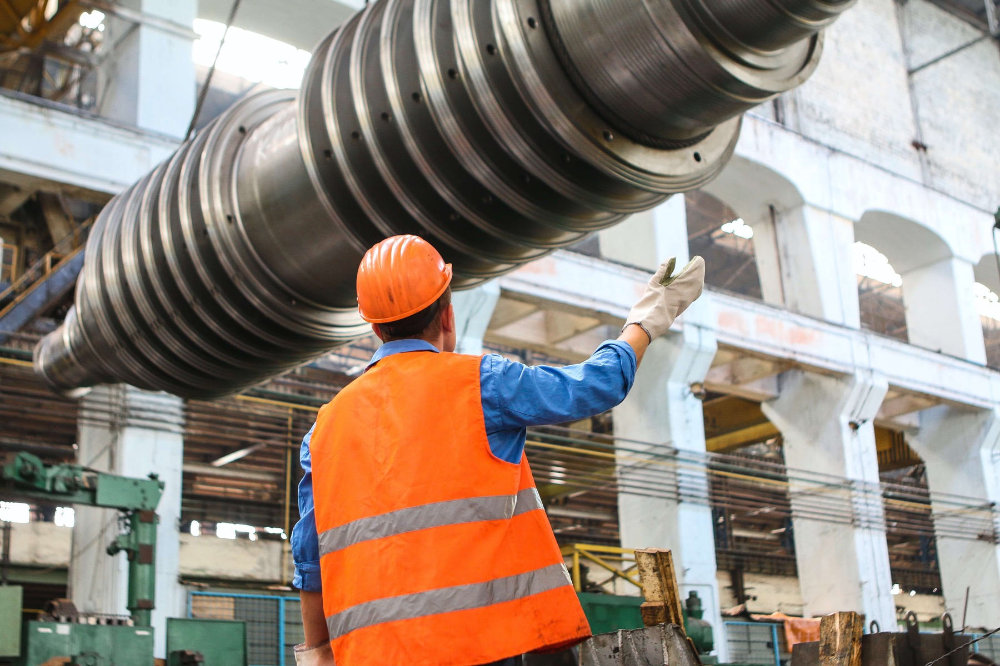
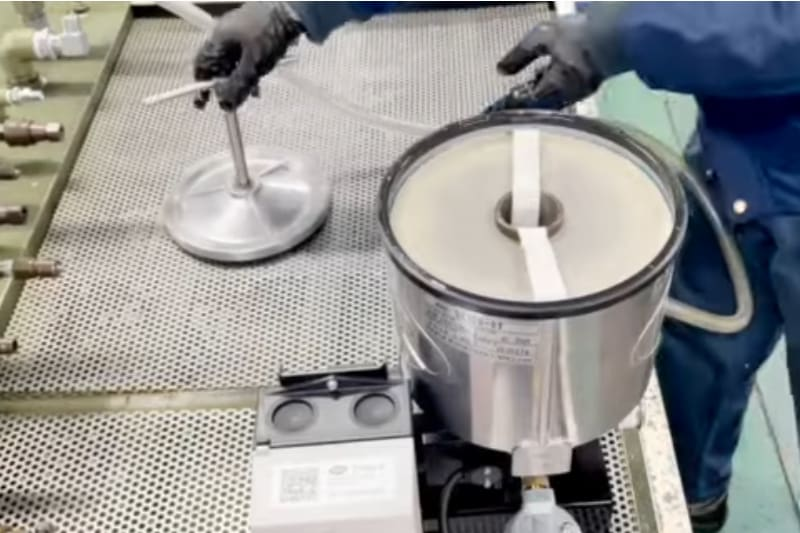

- Home
- Diensten
Diensten: van advies tot onderhoud ter plaatse
Triple R Europe levert meer dan filters. In onze werkplaats in Aartselaar stellen we units op maat samen en testen we ze. We installeren ze bij u, onderhouden ze ter plaatse, analyseren uw olie en verhuren toestellen. Zo blijft uw olie proper, van de eerste vraag tot jaren later.
Onze diensten

01Werkplaats in AartselaarAssemblage en units op maat
Units samengesteld, getest en gekeurd in onze eigen werkplaats.
Meer over assemblage
02Bij u op de siteInstallatie en ingebruikname
We plaatsen uw systeem en nemen het samen met u in gebruik.
Meer over installatie
03Technische ondersteuningOnderhoud ter plaatse
Elementen vervangen, oliestalen nemen en storingen opsporen.
Meer over onderhoud 04Meten en opvolgen
04Meten en opvolgenOlieanalyse en oliebeheer
Weet hoe proper uw olie is, en houd ze zo.
Meer over olieanalyse 05Tijdelijke capaciteit
05Tijdelijke capaciteitVerhuur
Een oliereiniger of vacuümdroger tijdelijk huren.
Meer over verhuur 06Online
06OnlineSystembuilder en besparingscalculator
Stel zelf uw systeem samen en bereken wat schone olie oplevert.
Meer over de hulpmiddelen
Assemblage en units op maat
In onze werkplaats in Aartselaar assembleren we Triple R-filtratie-units: filterhuizen, tandwielpompen, elektromotoren, manometers, kleppen, leidingwerk en frames. Van compacte wandunits en mobiele trolleys tot grote systemen met meerdere huizen.
- Een unit afgestemd op uw installatie.
- Elke unit getest en gekeurd voor ze vertrekt: druk, debiet, draairichting van de motor en lekdichtheid.
- Met testrapport en leveringsdocumenten.
Installatie en ingebruikname
We installeren uw systeem en nemen het in gebruik bij u op de site, bij industriële klanten in België en Nederland, en af en toe verder in het buitenland.
- Installatie en inbedrijfstelling op uw machine.
- Uitleg aan uw onderhoudsteam over de bediening en het onderhoud van het systeem.
- Een helder interventierapport.
Onderhoud ter plaatse
Ook na de installatie volgen we uw systeem op. Onze technicus komt langs om uw units in topconditie te houden.
- Filterelementen vervangen, zonder morsen: de afvalzak zit in de middenbuis.
- Oliestalen nemen.
- Storingen opsporen en verhelpen.
Olieanalyse en oliebeheer
Een labo-analyse van uw olie met persoonlijk advies van een Triple R-specialist. Met ons oliebeheerprogramma nemen we een oliestaal voor en na het reinigen, en reinigen we de olie terwijl uw machine blijft draaien.
- Deeltjestelling (ISO 4406), water, viscositeit en varnish.
- Een oliestaal voor en na het reinigen.
- Reinigen zonder dat uw machine stilvalt.
Verhuur
Hebt u een oliereiniger maar tijdelijk nodig, bijvoorbeeld voor een flushing na een revisie, een inbedrijfstelling of om eerst het resultaat te zien? Huur dan een Triple R-toestel.
Systembuilder en besparingscalculator
Twee hulpmiddelen om zelf aan de slag te gaan, voor u een specialist spreekt.
Bespreek uw installatie met een specialist
Beschrijf uw machines in 2 minuten en ontvang vrijblijvend advies over de juiste filteroplossing.